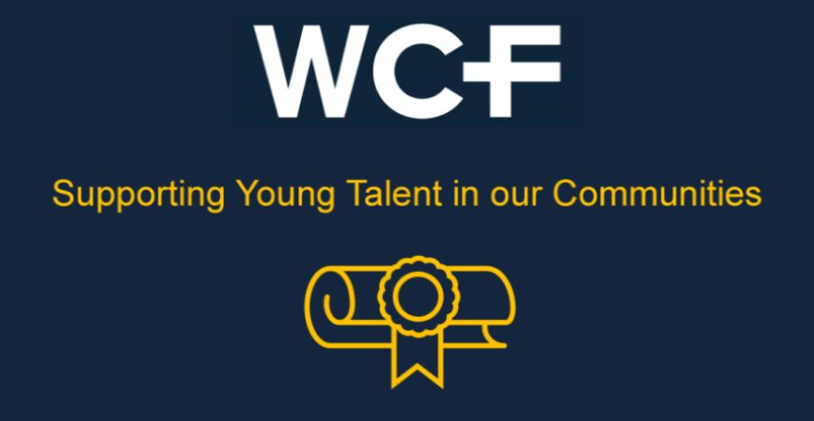
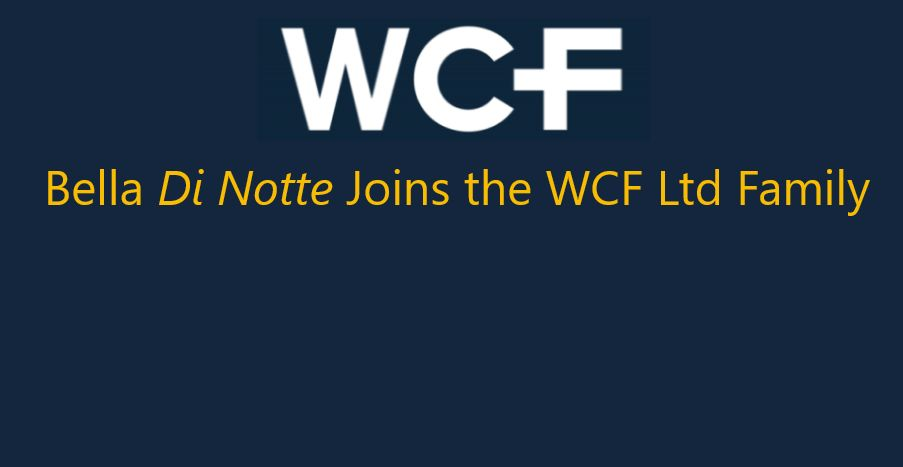

Supporting Young Talent in our Communities

Being part of our local communities is a core value of WCF. Our presence and engagement with those communities has supported us to grow, diversify and thrive during our 112-year legacy. As part of our ongoing commitment to this cause, this year saw colleagues of WCF giving up their time to help young people within our local areas. As part of our efforts to give back, we introduced a new initiative to support emerging talent in our communities, where members of our team attended local schools, colleges and career events to impart vital knowledge and experience for those who have recently or were about to leave full time education and embark on their chosen careers.
As part of this initiative, WCF colleagues have delivered talks to the next generation of talent, giving them an insight into the world of work, as well as helping to equip them with the skills and experience needed to shine when showcasing themselves at interview. In an era where the landscape of work is constantly evolving, it is crucial for young minds to be equipped with the right skills and knowledge to help them succeed. As part of this initiative, WCF colleagues have delivered talks to the next generation of talent, giving them an insight into the world of work, as well as helping to equip them with the skills and experience needed to shine when showcasing themselves at interview. In an era where the landscape of work is constantly evolving, it is crucial for young minds to be equipped with the right skills and knowledge to help them succeed.
Karen Kelso, WCF’s Head of People and Culture, recently joined forces with a number of other Cumbrian based businesses, attending William Howard Secondary School based near our Head Office in Brampton. Performing ‘mock interviews’ with Year-10 students, the day consisted of supporting students with their interview skills and techniques, and importantly, providing advice and guidance for when they are faced with this scenario in a real-life setting. The Year-10 students took on board the feedback shared and said that they felt more confident facing an interview situation in the future.
Reflecting on the day, Karen said, “It's not every day you get the opportunity to spend time with students who are starting to consider their very first step into the world of employment. Having a small part to play in how the next generation of talent is ready, and importantly feeling excited to take those first steps is extremely rewarding. This initiative was unfortunately not available when I attended school and I can see a huge benefit of how it can support those young people with the choices they have ahead of them. A big thank you to William Howard Secondary School for letting WCF be part of this day and to lend our support. ”Reflecting on the day, Karen said, “It's not every day you get the opportunity to spend time with students who are starting to consider their very first step into the world of employment. Having a small part to play in how the next generation of talent is ready, and importantly feeling excited to take those first steps is extremely rewarding. This initiative was unfortunately not available when I attended school and I can see a huge benefit of how it can support those young people with the choices they have ahead of them. A big thank you to William Howard Secondary School for letting WCF be part of this day and to lend our support.”
In addition to our efforts in Cumbria, People and Culture Partner Danielle Casbon, and Transport Planner Sophie Kay, have been spending their time at local schools and colleges in and around the Lincolnshire area, providing much needed advice and support to students from Years-7 to Years-13.
Visiting Boston Grammar School, Grantham College & University Centre, Grantham Young Peoples Learning Provision and Spalding High School, Danielle and Sophie joined other local businesses to share useful careers advice, information about employment opportunities, as well as techniques for interviewing with hundreds of young persons in those areas. The Boston Grammar School event alone saw around 850 young people attend, getting to hear from local businesses regarding employment and industry expectations aimed at broadening their knowledge and their horizons.
At WCF our mission is to give our people diverse, meaningful and interesting roles that allow them to make a real difference to our performance, and it was this message that helped us to explain just how great a place WCF is to work. Many people don’t know how they want their career to develop or what they want to specialise in, and our lack of corporate structure, opportunities to develop and to succeed, and our portfolio of diversified businesses allow our people to flex their roles according to their individual skills and capabilities. Rarely are 2 roles exactly the same at WCF and it is this exciting prospect that allowed us to share with the young people in attendance just how much their career can diversify and evolve here at WCF.
Enthused by the events she attended, Danielle said, “It’s been great attending these events alongside other local businesses. At every event we have been amazed at how engaged and interested the young people are in finding out about what steps they can take to achieve their goals and ambitions. Not only did our efforts go a small way to help young minds shape their futures, it was also an opportunity to attract new talent to WCF’s suite of businesses, creating a win-win scenario for both our organisation and the communities in which we operate.”
Giving back to our local communities…Supporting the next generation of talent…Showcasing why WCF is a great place to work for future employee-owners…That is the “WCF Way”.
< Previous Article
Bella di Notte Joins the WCF Ltd Family
